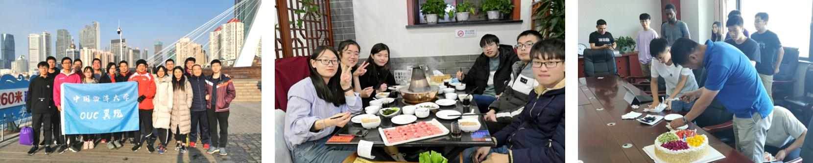

AI前沿理论研究小组是中国海洋大学信息学院视觉实验室的一个多学科交叉研究小组，董军宇教授为总负责人。课题组主要针对视觉数据（多媒体数据、自然纹理、遥感图像）进行研究，实现视觉数据高精度、高效解译及分析。
小组理念为“团结勤奋，共同进步”，欢迎对多媒体计算、大数据分析和图像处理感兴趣的同学加入我们，一起探索未知的世界，创造知识，享受快乐！
欢迎关注我们： 【团队知乎专栏】 【团队新闻】 【团队照片】
(2021年2月更新)
| Pytorch学习： | ColabDemo |
| 变化检测： | GarborPCANet CWNN NR_ELM FDA_RMG MLFN |
| 高光谱： | RMG ADGAN |
博士： 甘言海、孟钰鑫、举雅辊、王益国、王展梁、卢亮、Sadia、Israel
18级硕士： 张天戈、孙晨翔、桑青园、韩锋、张珊、王俊杰、吕越、杨冰冰
19级硕士： 伊俊杰、修士勇、刘文霞、曲晓帆、高琰、王会金、赵政达
20级硕士： 焦淑婷、刘彦汝、张马群、徐云哲、李欣、王猛 、潘浩东、冯敏、杨紫陌、龚卓然、李艳秋、李宁
Recovering Surface Normal and Arbitrary Images: A Dual Regression Network for Photometric Stereo
Yanku Ju, Junyu Dong, Sheng Chen
IEEE Transactions on Image Processing, 2021.
[PDF]
[CCF RankA]
Remote sensing image translation via style-based recalibration module and improved style discriminator
Tiange Zhang, Feng Gao, Junyu Dong, Qian Du
IEEE Geoscience and Remote Sensing Letters, 2021.
[PDF]
[Code@github]
[CCF RankC]
Change detection in synthetic aperture radar images using a dual-domain network
Xiqofan Qu, Feng Gao, Junyu Dong, Qian Du, Heng-Chao Li
IEEE Geoscience and Remote Sensing Letters, 2021.
[PDF]
[Code@github]
[CCF RankC]
Adaptive dropblock enhanced generative adversarial networks for hyperspectral image classification
Junjie Wang, Feng Gao, Junyu Dong, Qian Du
IEEE Transactions on Geoscience and Remote Sensing, 2020.
[PDF]
[Code@github]
[CCF RankB]
SAR image change detection based on multiscale Capusule network
Yunhao Gao, Feng Gao, Junyu Dong, Heng-Chao Li
IEEE Geoscience and Remote Sensing Letters, 2020.
[PDF]
[Code@github]
[CCF RankC]
Transferred deep learning for sea ice change detection from synthetic aperture radar images
Yunhao Gao, Feng Gao, Junyu Dong, Shengke Wang
IEEE Geoscience and Remote Sensing Letters, 2019.
[PDF]
[Code@github]
[CCF RankC]
Sea ice change detection in SAR images based on convolutional-wavelet neural networks
Feng Gao, Xiao Wang, Yunhao Gao, Junyu Dong, Shengke Wang
IEEE Geoscience and Remote Sensing Letters, 2019.
[PDF]
[Code@github]
[CCF RankC]
Automatic change detection in synthetic aperture radar images based on PCANet
Feng Gao, Junyu Dong, Bo Li, Qizhi Xu
IEEE Geoscience and Remote Sensing Letters, 2016.
[PDF]
[Code@github]
[CCF RankC]
Pay attention to devils: A photometric stereo network for better details
Yakun Ju, Kin-Man Lam, Yang Chen, Lin Qi, Junyu Dong
IJCAI, 2020.
[PDF]
[CCF RankA]
Arbitrary style transfer with parallel self-attention
Tiange Zhang, Ying Gao, Feng Gao, Lin Qi, Junyu Dong
ICPR, 2020.
[PDF]
[CCF RankC]
Change detection from SAR images based on deformable residual convolutional neural networks
Junjie Wang, Feng Gao, Junyu Dong
ACM Multimedia Asia, 2020.
[PDF]
[CCF RankC]
欢迎各校本科生/硕士生（特别是对研究感兴趣、编程能力较强、思维活跃、英语读写能力较好的同学）保送和报考前沿理论研究小组。欲加入本研究团队的同学，请尽早（保研同学大三下学期即可）邮件联系 gaofeng@ouc.edu.cn ，并准备好以下内容的PDF电子档：个人简历（包括个人简介、教育及科研经历、获奖情况、技能水平、研究兴趣及未来研究计划、自我评价等，请注明联系方式）， 历年成绩单。通常会在24小时内回复并预约面试交流。
跨媒体分析与检索研究： 对互联网图像、文本、视频等多模态数据进行分析、识别和挖掘，构建跨媒体搜索和监测系统。
图像处理基本算法研究：如何设计算法提高低质量观测图像的清晰度、分辨率、以及实现缺失区域的图像处理等基本问题。
遥感图像变化检测研究：如何设计深度学习算法（LSTM，CNN，GAN等）提高多时相遥感图像变化检测的准确率，以及多源异构数据的变化分析准确率。
备注：最看重是否在“理念”上合拍，特别是你是否真的对研究课题、图像处理与分析感兴趣，是否真的愿意投入200%的热情；随着与国际国内顶尖学者合作交流的增多，组内同学得到了合作研究（通常是半年到一年）的机会，我们也在努力创造更多这样的机会；我们与阿里、百度、华为、商汤、旷视、虹霸的国内同行有密切联系，组内同学得到了合作研究的机会，毕业后有机会加入他们。
